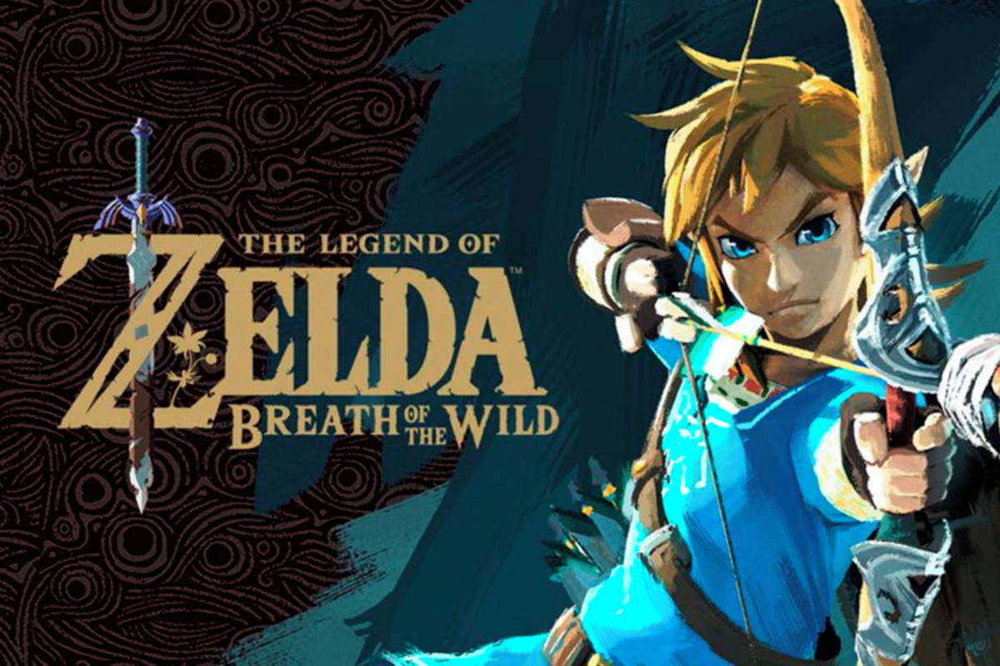
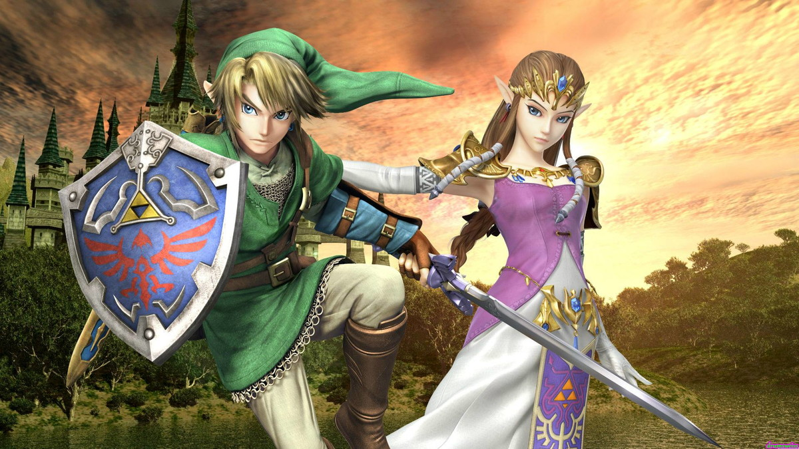
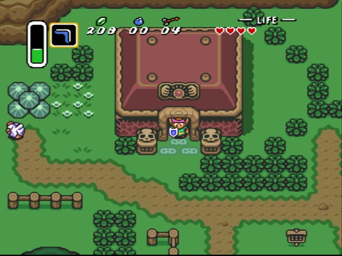

The Legend of Zelda (ゼルダの伝説 Zeruda no Densetsu?) é uma série de jogos eletrônicos da Nintendo criada em 1986 por Shigeru Miyamoto e Takashi Tezuka. Os jogos se passam no reino de Hyrule, num ambiente de fantasia. A jogabilidade mistura aventura e ação com elementos diversos. A série é muito apreciada por suas tramas complexas, quebra-cabeças, jogabilidade e pela superprodução.
O protagonista é o jovem herói Link cuja missão é proteger o reino de Hyrule e a Triforce, a relíquia deixada pelas Deusas criadoras do mundo, capaz de realizar desejos trazendo ao mundo uma era de harmonia e prosperidade, mas que também poderia destruí-lo caindo em mãos erradas. Cada um dos triângulos tem uma virtude diferente: Coragem, Sabedoria e Poder. O principal antagonista da série é Ganon. Porém conforme o tempo que os jogos foram evoluindo, se estabeleceu na mitologia, uma grande guerra contra o mal, trazendo novos vilões à tona.
A Philips, durante o acordo para construir um acessório de CD para o Super SNES, conseguiu os direitos da série e lançou três jogos Zelda para seu console CD-i (um recorde de Zelda em uma plataforma, igualado apenas pelo Game Boy Color, o GameCube e - se considerados os remakes - o GBA): Link: The Faces of Evil (1993), Zelda: The Wand of Gamelon (1993) e Zelda's Adventure (1995), os 3 sem participação da Nintendo. São considerados bem inferiores em relação a série "oficial", e receberam muitas criticas baixas dos fãs da franquia.
Onde comprar
Imagens

